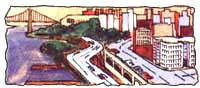

Issue # 50 - March/April 1978
From Darkness and Scattered Light by William Irwin Thompson, copyright 1978 by the author and reprinted with the permission of Anchor Press/ Doubleday, Garden City, New York. Available in paperback ($3.95) from any good bookstore. "The Metaindustrial Village" is the title of the second of the book's four chapters.
If the whole of mankind is on the brink of economic and ecological disaster, there may yet be cause for hope amid the despair. To read William Irwin Thompson's Darkness and Scattered Light is to share in his inspired-and inspiring-vision of humanity's immediate future ... one in which-he says-the human culture will undergo a planetary renaissance of ultimate benefit to all.
Thompson?a cultural historian who received his Ph.D. from Cornell University-has taught at the Massachusetts Institute of Technology, York University in Toronto, and Syracuse University. In 1973 he founded the Lindisfarne Association, an educational community located in New York City and devoted to the study and realization of a new planetary culture.
There are signs in the evolution of America, Dr. Thompson says, that, "while the cold-blooded dinosaurs are tearing up the landscape, there are some tiny mammals around with warm blood in their hearts". These reassurances ... and others less subtle ... abound in Darkness and Scattered Light.
I would like to focus on a positive way in which America can take on a new life in its role as the charismatic archetype of prosperous and powerful nationhood. Since all the world is trying to go the way of postindustrial civilization, all the world is imitating us . . . and if we create Los Angeles, then the Iranians or the Australians will try to have superhighways, smog, and traffic jams too. And so the way to change world culture is to come home to work for a transformation of the archetype of industrialization itself.
Human nature being what it is, it is fair to say that change comes from snobbery and elitism ... what a respected section of the population has, others soon want too. If a farmer feels that his father was a hick and that businessmen constitute the elite, then he will work hard to become an agribusinessman and begin to buy chemical fertilizers, computers, and huge machines.
To change all this, we have to get down to the roots of the whole way in which people think.
In our industrial culture, people think that only technology matters, and they cannot see that their minds have been captured by the mythology of the machine. Since it was an elite-first British, then American?which generated the mythology of industrialization, we need to see that if we are going to transform postindustrial society, we will need a new elite with a new mythology.
Now one of the dominant myths of industrial society is the myth of freedom. Suddenly the villager can be free of blood and soil, can leave it all behind him to go to the city and create a whole new identity. You leave the farm behind you, you leave the country hicks behind you, and you go to the city "to make it".
The charismatic myth of freedom in industrial society is the myth of "rags to riches". You see it everywhere expressed in the popular mythologies of literature, for it is the basic myth of the expanding middle classes. What it expresses is the tacit formula: "You are what you own." It's your personal patterns of consumption that tell people all about you. And so, it you are what you own, the more you own, the more you are.
If I were forced to make a guess, though, I would say that the next quarter century will see the destructuring of this industrialized civilization, but not its apocalyptic destruction. I believe that many of us will still be around in the year 2000.
But the way in which we will be around, I believe, will be profoundly altered. If in industrial society our identity was based upon our homes, our cars, our appliances, then in the new planetary culture our identity will be based upon a new arrangement of time and space in our very being. You are what you own in industrial society; in planetary culture, your being is what you are.
The postindustrial world we took for granted from 1945 to 1974 is over, and the next thirty years will see a countermovement away from consumption to community.
People are going to have to come together in new communities of caring and sharing; they are going to have to give up many of their energy-intensive ways to return to labor. What will be necessary in the movement away from suburban society will be a rediscovery of the preindustrial village.
I would say that there are four archetypal forces at work today in the transformation of contemporary culture:
[1] The planetization of nations.
[2] The decentralization of cities.
[3] The miniaturization of technology.
[4] The interiorization of consciousness.
Teilhard de Chardin first observed the planetization of nations in the 1940's, in his essay on the atom bomb. He noted that the more the nations built armaments to separate themselves and maintain their sovereign independence, the more the very armaments forced them to come together in a new international system. And so the planetization of nations is the emergence of a new world order.
The second force is the decentralization of cities. The modern flow of information through satellites and electronic media means the end to the kind of cities we have known in the period from Uruk to New York. Like the biosphere, or the oceans, or a superconductor, culture has now become a complex circulating electrical fluid, a liquid crystal. In what Whitehead called the "prehensive unification of space", every point is involved with every other point, and a tiny Findhorn or Auroville can be as important for cultural evolution as a giant London or New York.
The third societal force is the miniaturization of technology. I believe that this overlooked shift in the scale of man to machine has profound implications for cultural evolution. If the machines are small and people can once again hear the trees, then the sensibility goes through a profound revolution and the relationship between culture and nature changes dramatically. The miniaturization of technology enables us to reduce the scale of the impact of industrialization on the biosphere. In a shift from hardware to information, from capital-intensive economies of scale to communal forms of regional production, from consumer values to contemplative values, the industrial maladjustment to nature is corrected and the neurotic compulsions of modern society are alleviated.
The fourth societal force is the interiorization of consciousness. In the emergence of the modern world in the sixteenth century, there was a shift from the centripetal orientation of medieval Christendom to the centrifugal expansions in the age of humanism, exploration, and science. This orientation still continues in the exploration of space. The externalization of consciousness leads the individual to look for all values outside: The next frontier contains the solution to all the disappointments of the last frontier. You move to the New World, cut down its forests, pollute its great lakes, and then look to Australia, Brazil, or outer space. Now, however, we can sense the beginning of the end of externalization.
The interiorization of consciousness is a change in values in which we begin to look for the source of the good life within rather than without.
I believe that the population of the earth will actually decline over the next century. Meteorologists have indicated that we are entering a new period of cold weather, and that the last cycle has been an unusually warm spell. This period of planetary good weather has been associated with the population increases that preceded the Industrial Revolution.
If we are entering a new cold period, and this climatic change is occurring right at the time of a fuel crisis, then the new demands of heating, coming at a time of increased demands for fossil-fuel fertilizers, insecticides, and oil for tractors, trucks, and combines, will create a global crisis for agribusiness, the balance of trade payments, and currency values.
Since we have just twenty-odd days' worth of food stored on the planet, it would only take a few cold winters coupled with a few summer droughts to devastate the industrial civilization of planet earth. In America we would then discover to our grief just what it means to live in an oil-based postindustrial society in which 98 percent of the population is not involved in food production.
We can see how unnatural postindustrial civilization is if we look back at a few historical figures. In 1800 more than 90 percent of the American population lived in rural areas, and even as late as 1880 two-thirds of the people lived in the country. But by 1950 twothirds of the population lived in cities. If you don't believe in the possibilities of change, just stop to consider the dramatic move from the country to the city.
Well, if a social movement can go in one direction, it can also go in the other. I believe that by the year 2000 we are going to have to have one-half of our population living in rural areas. Assuming that we do not experience a catastrophic return to the Dark Ages, I see the return to the country as the creation of a new metaindustrial culture and not a return to preindustrial agrarian society.
But perhaps I had better define my terms. Using only a single parameter, namely, the distribution of population in sections of the economy, we can get a good idea of the meaning of the terms preindustrial, postindustrial, and metaindustrial.
From 1900 to 1972 America experienced a shift in population from agriculture and industrial production to services, and this shift, supported by massive injections of oil, is what postindustrial civilization is all about. In America the most highly populated profession is teaching, and so it is fair to say that we live in a world of information, not of farms or factories. To appreciate the unusual nature of our civilization, we should consider the fact that in Maoist China, 96 percent of the population is involved in food production. The Chinese have factories and hightechnology laboratories, but they do not have freeways, McDonald's stands, and shopping centers.c I am assuming that by the year 2000 the electronic decentralization of information and the miniaturization of technology will enable people to move from New York. Detroit, and Los Angeles to live in rural areas. I am assuming that the production of good small tools will enable communities to produce goods and services in small workshops rather than large factories. I am also assuming that, as human beings begin to move out of the concrete world of New York to live with trees, the consciousness of the individual will undergo a profound transformation.
And so I imagine a transformation from the present postindustrial civilization to a new planetary, metaindustrial culture. I imagine a movement in America in which 40 percent of the population becomes involved with food production. If in the near future we begin to experience a shortage of food, then the sacredness of food will have to be rediscovered, and that resacralization will have to be part of an individual's education. As in Mao's China, or in the spiritual community of Findhorn in Scotland, the students and teachers will have to work in the fields as well as in the libraries.
Not only will colleges have to become like the community of Findhorn, but factories will also. In a shift from the old factory system, which alienates women from the productive process and workers from management, factories will need to become communities with workers on the board of directors of the local and autonomous small plant. With an emphasis on contemplative and communal values, the goods would be crafted to be good and long-lasting, after the traditions of the Shakers.
The agricultural economy of the metaindustrial village would focus on organic gardening and the replacing of fossil-fuel agribusiness with natural cycles in the food chain. Since the shift from gardening to field tillage with the plow originally displaced women from food production, the return to ecologically sophisticated gardening enables women to return to take up significant roles in the economy of the village, and thus to overcome the sexual alienation characteristic of industrial society.
It is always unsettling and annoying for one culture to see a subculture within its own society. It is all well and good to travel to some exotic and exciting culture halfway round the world, but when an alien way of life sprouts up in your own back yard it feels as if crab grass is invading the family turf. Sometimes when people see another culture, they make a move, but since such moves are full of risks, it is always very few people who are willing to undertake such risks.
And yet risk-taking is what evolution is all about. Some people prefer to take risks with the survival of the human species by gambling on nuclear power . . . others prefer to take risks with their own way of life. By 1984 we should be at the fork in the road. Then everyone should be able to see clearly the choice we need to make.
One road will lead toward nuclear power, strip mining, and authoritarian governments which can underwrite the contracts for the corporations and the pension funds of the labor unions, as well as protect industrial society from revolution and terrorism. The other road will lead toward a spiritual awakening on the level of the great universal religions that have guided the cultural evolution of humanity. This path will be expressed by a change of heart and mind, a new wedding of nature and culture, and a new kind of human community which can express the resacralization of earth.
With solar collectors contrasted with smog, smokestacks with windmills, meditators with teenagers who have radios blasting in their ears as they walk the crowded streets ... I hope that Americans will look at the two roads and choose the wisdom of the poet Gary Snyder, "to live lightly on the earth".
|
 |
|
|